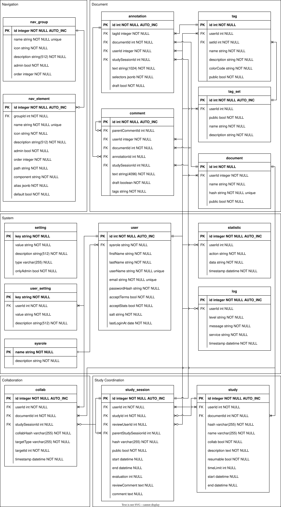

Database
The underlying data store of CARE is a relational database. The PostgresSQL database is
managed and accessed via Sequelize. The backend services and sockets of CARE access the
database via predefined methods provided in with the MetaModel class in backend/db directory, which in turn utilize Sequelize as an layer
of abstraction to query and update the database.
The database schema is modified via Sequelize’s migration system.
make init adds any new migrations to the database. Modifying the database schema therefore means adding a new
migration and potentially a new Sequelize model.
All relevant files can be found in the backend/db folder.
Models
Models are defined in the models folder.
They are defined using the Sequelize ORM.
Warning
The diagram below is not up to date with the current implementation.
For the most recent definitions, please check the actual code in the
backend\db\models folder.
The following entity relationship model (ERM) shows the relations between the different models:
{kind=link}

Additionally, the following attributes are added to each table:
deleted: Boolean indicating whether the entry is deleted or not.createdAt: The time when the entry was created.updatedAt: The time when the entry was last updated.deletedAt: The time when the entry was deleted.
See also
Auto tables are mirrored to the frontend and live-synced. For the full pipeline and requirements, see Requirements (autoTable & Subscription) and Data Transfer.
Migrations
Working with migrations is done using the Sequelize CLI.
To install the CLI, run npm install --save-dev sequelize-cli inside of the db folder.
After that, you can run npx sequelize --help to see all available commands.
To create a new migration, run npx sequelize migration:generate --name <name>.
This will create a new file in the migrations folder, containing a up and a down function.
Each migration file in CARE follows a consistent structure and naming pattern to ensure reliable execution and easy readability.
File Name Structure:
YYYYMMDDHHMMSS-action-target.js
YYYYMMDDHHMMSS: A UTC timestamp ensuring chronological execution.action: What the migration does (e.g., create, extend, drop).target: The name of the database table affected by the migration (e.g., user, study, session).
Example:
20240411143091-extend-setting-editor.js
The action part of a migration filename typically falls into one of the following categories:
create — Introduces a new table or model
basic — Inserts default records for a table (e.g., roles, tags, nav items)
extend — Adds new columns or modifies existing tables
transform — Applies structural or content transformations to existing data
drop — Removes obsolete tables or features
Adding a New Model
Use the CLI to create a model and a migration file.
npx sequelize migration:generate --name <name>-nav
In the newly generated migration file under migrations change the table name. It should be a singular lower-case term.
Now you need to add a new model file for this table. Create a new file in
backend/db/modelsthat exports a function for generating the model as an instance of a MetaModel from a given Sequelize object. This looks as follows for a table calledsimpletable(the name introduced in 2.):
'use strict';
const MetaModel = require("../MetaModel.js");
module.exports = (sequelize, DataTypes) => {
class SimpleTable extends MetaModel {
static associate(models) {
}
}
SimpleTable.init({
updatedAt: DataTypes.DATE,
deleted: DataTypes.BOOLEAN,
deletedAt: DataTypes.DATE,
createdAt: DataTypes.DATE
}, {
sequelize: sequelize,
modelName: 'simpletable',
tableName: 'simpletable'
});
return SimpleTable;
};
Add the foreign keys and constraints to the migration file as desired. For examples check out the other migrations. For a very simple table
simpletablethis would look like this:
module.exports = {
async up(queryInterface, Sequelize) {
await queryInterface.createTable('simpletable', {
id: {
allowNull: false, autoIncrement: true, primaryKey: true, type: Sequelize.INTEGER
},
deleted: {
type: Sequelize.BOOLEAN, defaultValue: false
},
createdAt: {
allowNull: false, type: Sequelize.DATE
},
updatedAt: {
allowNull: false, type: Sequelize.DATE
},
deletedAt: {
allowNull: true, defaultValue: null, type: Sequelize.DATE
}
});
}, async down(queryInterface, Sequelize) {
await queryInterface.dropTable('simpletable');
}
If necessary update the model file accordingly (if fields have been changed). Make sure adding additional columns like deleted, createdAt, updatedAt and deletedAt is done in the migration file.
Accessing a Model
The above steps are necessary to create a new migration and associated model. To encapsulate
the database interactions, the MetaModel class already contains several convenience functions for accessing the
respective table. For instance, getting a single row entry by a provided ID (getById(id)). Accessing the DB via
these default functions is as simple as accessing the table model and executing the static method.
// usually, you just access the models loaded in the web server; for completeness we provide the imports here:
const {DataTypes} = require("sequelize")
const db = require("./db/index.js")
const SimpleTable = require("./db/models/simpletable.js")(db.sequelize, DataTypes);
SimpleTable.getById("x");
Note
Generally you should not import the db object yourself and load a model as in the provided example. Instead, the web server object already holds the respective models in a class attribute. Please check out the Sockets for the details.
In case you need more specific functions, you may simply add static access methods to the new model class. For instance:
'use strict';
const MetaModel = require("../MetaModel.js");
module.exports = (sequelize, DataTypes) => {
class SimpleTable extends MetaModel {
static associate(models) {
}
// new access function specific to this model
static async getDefaultRow() {
//do error management -- ommitted for brevity
return await this.findOne({ where: {'id': "x"}, raw: true});
}
}
//... initialization etc.
};
See also
Runtime update semantics (e.g., timestamping closed, soft-deletes) are implemented in the shared MetaModel.
You can find more informations about the MetaModel in the next section.
MetaModel Behavior
The MetaModel class in backend/db/MetaModel.js provides shared behaviors for all Sequelize models in CARE. These simplify database operations and ensure consistent logic across the application.
Included Behaviors:
updateById:Sets
deletedAt = Date.now()whendeletedis truthy (soft delete)Sets
closed = Date.now()whenclosedis truthyEnables
individualHooksif the model definesbeforeUpdateorafterUpdatehooks, ensuring that per-row hooks are executed (used for cascading logic, etc.)Returns the updated row, even if it has been soft-deleted
getAutoTable/getAll:Automatically applies access-aware filters: - Exclude rows marked as
deleted- Restrict rows byuserId- Includepublicrows when applicable
These shared methods reduce the need to repeat logic and ensure consistent query semantics across models.
Populating a Table
To populate a table with basic data rows, you can use seeds to test and debug and then convert it into a regular migration.
Create a seeder
npx sequelize-cli seed:generate --name <seeder-name>
Adapt the seeder in the respective file under directory “seeders”.
Move it to the migrations folder.
Double check that you have set the down method accordingly – you don’t want to drop an entire table if you only add a few rows. Delete just these rows.
Database Hooks
Definition and Purpose
Sequelize models support lifecycle hooks, which are special functions that run automatically at key points during database operations — such as after a row is created, updated, or deleted.
Note
For a full reference on available hooks and usage, see the official Sequelize documentation: Sequelize Hook Documentation.
Hooks improve data consistency and encapsulation by allowing you to:
Assign related data after creation
Cascade deletions or cleanup logic
Trigger logic in response to state changes (e.g., toggling a public or deleted flag)
This ensures that important side effects happen reliably regardless of where the database call originates.
Usage of afterCreate and afterUpdate
The most common lifecycle hooks used in CARE are:
afterCreate— runs after a new entry is added to the databaseafterUpdate— runs after an existing entry is updated
These hooks receive the model instance and the options object as arguments. The options object may include useful context or the active database transaction.
hooks: {
afterCreate: async (instance, options) => {
const { transaction, context } = options;
// e.g., assign roles after user creation
},
afterUpdate: async (instance, options) => {
const { transaction } = options;
// e.g., trigger logic if a specific flag was changed
}
}
Cascade Logic Example
A common pattern is to perform cascade deletion: when a parent item is soft-deleted, its related children should be removed as well.
You can use the afterUpdate hook to detect when the deleted flag changes, and trigger cleanup accordingly:
afterUpdate: async (instance, options) => {
if (instance.deleted && instance._previousDataValues.deleted === false) {
await SomeModel.deleteChildren(instance.id, {
transaction: options.transaction
});
}
}
Note
By comparing the current value (instance.deleted) to the previous one (instance._previousDataValues.deleted), you ensure the logic only runs when the value actually changes.
Updates triggered by hooks can also be propagated to subscribed frontend components. For details, see Data Transfer.
See also
After commits, changes on autoTable models are broadcast to subscribers.
See Store Updates & and Data Flow.
Handling individualHooks
When using Model.update(…), Sequelize does not run per-row hooks like afterUpdate by default. It only runs them once for the entire bulk update.
To ensure hooks are triggered for every updated row, you must enable:
individualHooks: true
Example use inside a model update utility:
const options = {
where: { id },
transaction,
individualHooks: true
};
await this.update(data, options);
Note
While this behavior is important to be aware of, it’s not something we’ve encountered often in practice. In most cases, bulk updates work as expected without needing individualHooks.